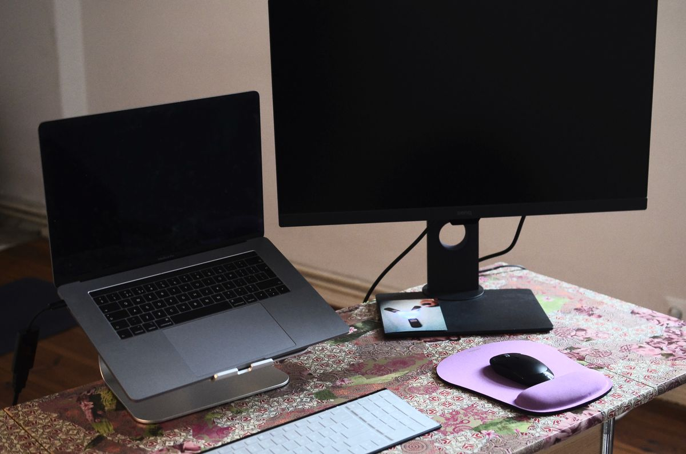
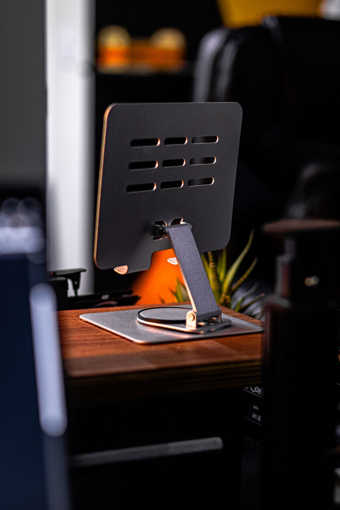
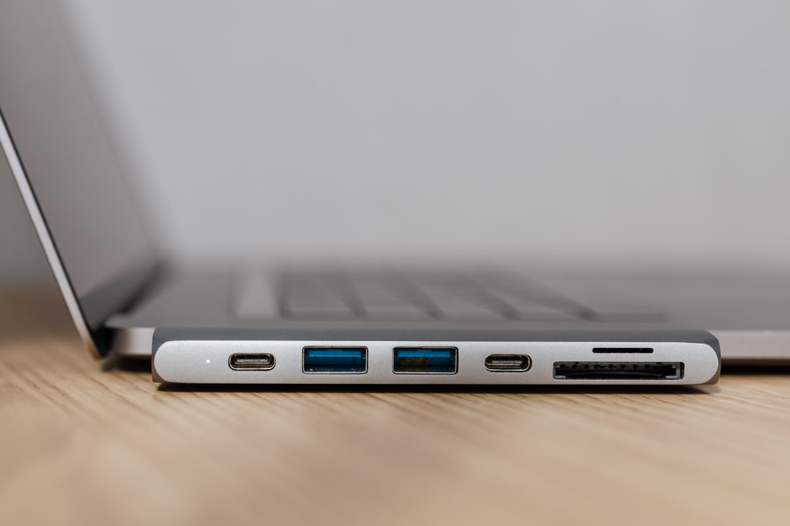

แท่นระบายความร้อนโน้ตบุ๊ก (Laptop Cooling Pad) ตัวช่วยยืดอายุเครื่องที่มือ WFH ควรมี 2026
แท่นระบายความร้อนโน้ตบุ๊กช่วยลด thermal throttling ยืดอายุแบตเตอรี่และชิ้นส่วนภายใน รวมตัวเลือกยอดนิยม พร้อมเกณฑ์การเลือกซื้อ ซื้อผ่าน Shopee
อัปเดต กรกฎาคม 2026
ใครที่ใช้โน้ตบุ๊กทำงานทั้งวันบนโต๊ะทำงาน โดยเฉพาะช่วงที่เปิดหลายโปรแกรมพร้อมกันหรือประชุมวิดีโอคอลยาว ๆ คงเคยรู้สึกว่าเครื่องเริ่มร้อนจนพัดลมภายในทำงานหนัก เสียงดัง หรือประสิทธิภาพเครื่องตกลงอย่างเห็นได้ชัด ปัญหานี้เกิดจากการที่โน้ตบุ๊กส่วนใหญ่ถูกออกแบบให้บางเบา ทำให้พื้นที่ระบายอากาศภายในค่อนข้างจำกัด และเมื่อวางบนโต๊ะแบบตรง ๆ ช่องระบายความร้อนด้านล่างก็มักถูกบังจนอากาศไหลเวียนได้ไม่เต็มที่ แท่นระบายความร้อนโน้ตบุ๊กจึงเป็นอุปกรณ์เสริมเล็ก ๆ ที่ช่วยแก้ปัญหานี้ได้ตรงจุด และยังช่วยยืดอายุการใช้งานเครื่องในระยะยาวอีกด้วย
ทำไมโน้ตบุ๊กร้อนแล้วถึงเป็นเรื่องใหญ่
ความร้อนสะสมในโน้ตบุ๊กไม่ได้แค่ทำให้เครื่องทำงานช้าลงจากการที่ CPU ต้องลดความเร็วตัวเองลงเพื่อป้องกันความเสียหาย (thermal throttling) แต่ยังส่งผลต่ออายุแบตเตอรี่และชิ้นส่วนอิเล็กทรอนิกส์ภายในให้เสื่อมเร็วกว่าปกติ สำหรับคนที่ทำงานสายกราฟิก ตัดต่อวิดีโอ หรือรันโปรแกรมหนัก ๆ อย่างต่อเนื่อง ความร้อนสะสมยิ่งเป็นปัญหาที่มองข้ามไม่ได้ การมีตัวช่วยระบายความร้อนที่ดีจึงไม่ใช่แค่เรื่องความสบาย แต่เป็นการลงทุนเพื่อปกป้องอุปกรณ์ราคาแพงให้ใช้งานได้ยาวนานขึ้น
นอกจากเรื่องความร้อนแล้ว แท่นวางโน้ตบุ๊กแบบมีพัดลมยังช่วยยกระดับหน้าจอให้สูงขึ้นเล็กน้อย ทำให้มุมมองการพิมพ์งานสบายคอมากขึ้นเมื่อใช้ร่วมกับคีย์บอร์ดและเมาส์แยก ถือเป็นอุปกรณ์ที่ตอบโจทย์ทั้งด้านฟังก์ชันและสุขภาพในตัวเดียว
รวมแท่นระบายความร้อนโน้ตบุ๊กที่น่าใช้

1. แท่นระบายความร้อนพัดลมคู่ ปรับความเร็วได้
รุ่นนี้เหมาะกับคนที่ใช้โน้ตบุ๊กสเปกแรงหรือรันงานหนักบ่อย เพราะมีพัดลมขนาดใหญ่สองตัวที่ให้ลมแรงและกระจายทั่วถึง ปรับระดับความเร็วลมได้ตามต้องการ บางรุ่นมีไฟ LED บอกสถานะให้ดูทันสมัย เหมาะกับคนที่ต้องการประสิทธิภาพระบายความร้อนสูงสุด แท่นระบายความร้อนพัดลมคู่

2. แท่นวางโน้ตบุ๊กปรับมุมได้พร้อมพัดลมเงียบ
สำหรับคนที่ทำงานในพื้นที่เงียบหรือห้องประชุมที่ต้องการความสงบ รุ่นนี้ออกแบบพัดลมให้เสียงเบามาก แทบไม่รบกวนขณะประชุมออนไลน์ ปรับมุมเอียงได้หลายระดับเพื่อความสบายตาและท่าทางที่ถูกต้อง แท่นวางโน้ตบุ๊กพัดลมเงียบ
3. แท่นระบายความร้อนแบบพกพา น้ำหนักเบา
เหมาะกับคนที่ทำงานนอกสถานที่หรือสลับที่ทำงานบ่อย ตัวเครื่องบางเบา พับเก็บง่าย แท่นระบายความร้อนพกพา

4. แท่นระบายความร้อนแบบตาข่ายโลหะ ระบายอากาศธรรมชาติ
ถ้าไม่อยากพึ่งพัดลมไฟฟ้า รุ่นนี้ใช้โครงสร้างตาข่ายโลหะที่ยกโน้ตบุ๊กให้ลอยจากพื้นผิวโต๊ะ ช่วยให้อากาศไหลเวียนได้เองตามธรรมชาติ ไม่มีเสียงรบกวน และไม่ต้องเสียบสายไฟเพิ่ม แท่นระบายความร้อนตาข่ายโลหะ

5. แท่นระบายความร้อนพร้อมช่อง USB Hub ในตัว
รุ่นนี้เพิ่มความคุ้มค่าด้วยการติดตั้งพอร์ต USB เพิ่มเติมมาให้ในตัว ทำให้เสียบเมาส์ คีย์บอร์ด หรืออุปกรณ์อื่นได้โดยไม่ต้องใช้ฮับแยก เหมาะกับคนที่มีอุปกรณ์เสริมเยอะแต่พอร์ตบนโน้ตบุ๊กมีจำกัด แท่นระบายความร้อนพร้อม USB Hub
เกณฑ์การเลือกซื้อแท่นระบายความร้อนโน้ตบุ๊ก
ก่อนตัดสินใจซื้อ ควรพิจารณาขนาดโน้ตบุ๊กที่ใช้งานอยู่ก่อนเป็นอันดับแรก เพราะแท่นแต่ละรุ่นรองรับขนาดหน้าจอต่างกัน ควรเลือกให้พอดีหรือใหญ่กว่าตัวเครื่องเล็กน้อยเพื่อความมั่นคง ถัดมาคือเรื่องความแรงและความเงียบของพัดลม หากทำงานในพื้นที่เงียบควรเลือกรุ่นที่ระบุค่าเดซิเบลต่ำ หรือเลือกแบบไม่มีพัดลมไปเลยถ้าความร้อนไม่ได้เป็นปัญหาหนัก
อีกจุดที่ควรดูคือวัสดุพื้นผิวที่รองรับตัวเครื่อง ควรเป็นวัสดุกันลื่นเพื่อป้องกันโน้ตบุ๊กไถลขณะใช้งาน และควรเช็กว่าใช้พอร์ตเชื่อมต่อแบบ USB-A หรือ USB-C เพื่อให้เข้ากับพอร์ตที่มีอยู่บนเครื่อง สุดท้ายคือน้ำหนักและความสามารถในการพับเก็บ หากต้องพกพาบ่อยควรเลือกรุ่นที่บางเบาและพับเก็บสะดวก
สรุป
แท่นระบายความร้อนโน้ตบุ๊กอาจดูเป็นอุปกรณ์เล็ก ๆ ที่หลายคนมองข้าม แต่ผลลัพธ์ที่ได้คือเครื่องทำงานเย็นขึ้น เสียงพัดลมภายในเบาลง ประสิทธิภาพการทำงานคงที่ และที่สำคัญคือช่วยยืดอายุการใช้งานของโน้ตบุ๊กในระยะยาว สำหรับใครที่ทำงาน WFH เป็นประจำและรู้สึกว่าเครื่องร้อนบ่อย ลองพิจารณาเพิ่มอุปกรณ์นี้เข้าไปในโต๊ะทำงาน รับรองว่าจะรู้สึกถึงความแตกต่างตั้งแต่การใช้งานครั้งแรก
บทความนี้มีลิงก์ affiliate เมื่อคุณซื้อผ่านลิงก์ เราอาจได้รับค่าคอมมิชชั่นโดยที่คุณไม่ต้องจ่ายเพิ่ม